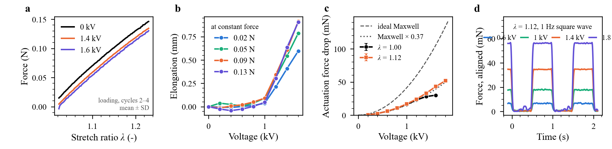
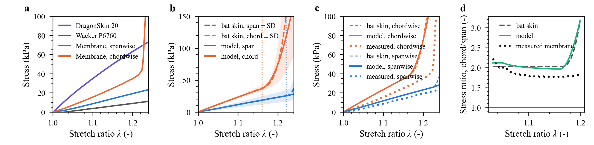
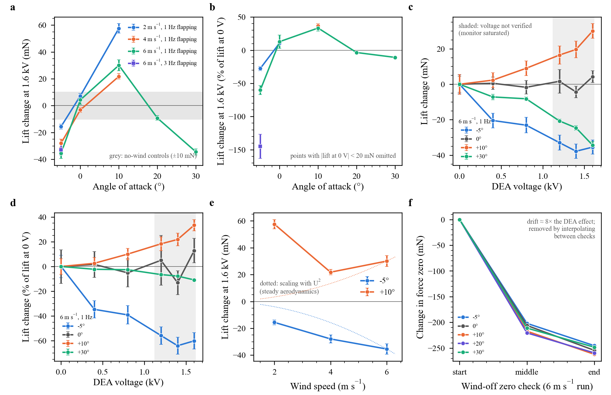

Active membrane wings / B-fruit
B-fruit: 10 cm scale
Silicone membrane wings of fruit-bat size (12 × 7 cm per side on the FAAV flapping rig; 6 × 5 cm for gliding), with discrete rolled DEAs running chordwise in the skin, like the plagiopatagiales muscles of bats. The DEAs work on the bench, but in the wing they have nothing to pull against (Eq. 1).
No lift change while gliding, and why

MeasuredStatics
- a Each voltage switch gives a spike, not a step: a transient of the switching, $i = C\,dV/dt$, picked up by the rig (Eq. 3, likely cause).
- b, d Four campaigns, two strip wings and two membranes: the lift changes stay below the detection floor (Eq. 2), within 1.5 % of lift.
- c The response is the same with and without wind, so its aerodynamic part, the difference between the two, is about zero (Eq. 2).
Why: with a free trailing edge, the chordwise forces across any cut must sum to zero (Eq. 1). DEA tension would need membrane compression, so the DEAs go slack and bow, as seen in the wings.
The rolled DEA on the bench

MeasuredModel
- c Force drop about 50 mN at 1.6 kV, following $V^2$ at 0.37 of the ideal Maxwell force (Eq. 4).
- At $\lambda$ = 1.00 it saturates near 30 mN from 1.4 kV: the DEA has lost all its pre-tension and cannot drop further (Eq. 5).
- d Clean square response at 1 Hz.
The actuator itself works. What was missing is a load path (Eq. 1).
A membrane with bat-skin anisotropy

MeasuredYeoh fit
- b, c The composite model (Eq. 7) matches bat skin in both directions; the measured membrane is softer chordwise.
- d The chord-to-span stress ratio, $s_y/s_x$ from Eq. 7, is about 2, as in bat skin (measured membrane 1.8).
n = 1 per direction; specimen width and gauge assumed.
Flapping on the FAAV rig
Not established. Voltages ran in ascending order while the force zero drifted about 8× the effect (f), so drift and voltage cannot be separated (Eq. 8). The voltage monitor saturated above 1.1 kV (shaded), and there was one run.

Preliminary
- a, b Lift change antisymmetric in angle of attack and near zero at 0°, as camber that follows load would give (Eq. 6); the sign flips after stall, where the model no longer holds.
- e At −5° it grows roughly as $U^2$, as $\Delta L = q S\,\Delta C_L$ would (Eq. 9).
Needs a randomised repeat with a sham before any claim.
Equations
1. Free trailing edge (exact statics)
$$\sum_{\text{DEAs cut}}F_i+\int_\text{cut}N_{yy}\,dx=R_\text{supports aft of the cut}\;\xrightarrow{\ \text{free TE, free tip}\ }\;0$$
- Cut the wing along a spanwise line and take the part behind it. If no support (root plate, digit, tendon) acts on it, the chordwise forces across the cut sum to zero.
- DEA tension then requires membrane compression, which a membrane cannot carry (it wrinkles), so the DEA relaxes to near zero tension and voltage only lengthens it.
- Only shear transfer to the root plate keeps some tension, fading within about 50–70 mm of it.
2. Detection floor and aerodynamic part
$$\Delta L_{min} = 3\,\frac{\sigma_{pair}}{\sqrt{n}},\qquad \Delta L_{aero} = \Delta L_{wind} - \Delta L_{no\ wind}$$
- $\sigma_{pair}$: scatter of paired on/off differences; $n$ pairs. An effect below $\Delta L_{min}$, or present without wind, is not aerodynamic.
3. Switching transient
$$i = C\,\frac{dV}{dt}$$
- A fast switch drives a current spike through the leads; its electrostatic or mechanical pickup gives a spike in the force, not a step.
4. Rolled DEA force
$$\Delta F = \eta\;v_{act}\,\varepsilon_0\varepsilon_r\left(\frac{V}{t_{act}}\right)^2 A_{roll}\,N,\qquad \eta \approx 0.37\ \text{(measured / ideal)}$$
- About 11 µm of air gap per film would explain the missing part (hypothesis).
5. Running out of pre-tension
$$F(V) = \max\big(0,\;F_0 - \Delta F(V)\big)$$
- Once $\Delta F$ reaches the pre-tension $F_0$ the DEA is slack and voltage only lengthens it: the flat top at $\lambda$ = 1.00. Pre-stretch raises $F_0$.
6. Camber follows load
$$\frac{h}{c} = \frac{C_L\, q\, c}{8T},\qquad \Delta\!\left(\frac{h}{c}\right) \approx -\frac{h}{c}\,\frac{\Delta T}{T}$$
- A tension drop raises camber in proportion to the camber already there, so the change has the sign of $C_L$: antisymmetric about zero lift.
- Lower pre-stretch lowers $T$ and raises the authority, about tenfold from $\lambda$ 1.08 to slack.
7. Membrane strain energy
$$W_s=v_m\sum_{i=1}^{3}C_i\,(I_1-3)^i+\sum_{x,y} v_f\,\frac{E_f\,(\sqrt{I_4}-1)^2}{2},\qquad s=2(\lambda-\lambda^{-2})\frac{\partial W_s}{\partial I_1}+v_fE_f(\lambda-1)$$
- Yeoh matrix plus fibre families along span and chord; the anisotropy comes from compliant silicone features, not stiff fibres. Valid to $\lambda$ = 1.22.
8. Drift confounds an ascending voltage order
$$\Delta L_{apparent}(V_k) = \Delta L(V_k) + d\,(t_k - t_0)$$
- If voltage rises with time, a linear drift $d$ looks like a dose response. A randomised order with a sham separates them.
9. Quasi-steady flapping
$$\Delta\alpha_{eff}=-\arctan\frac{\Omega r}{U},\qquad k=\frac{\pi fc}{U},\qquad \Delta L = \tfrac12\rho U^2 S\,\Delta C_L$$
- For $k \lesssim 0.1$ (1–2 Hz at 4 m/s or more) a flapping section passes through slow static states, so a static angle sweep covers the whole cycle, and a fixed $\Delta C_L$ gives $\Delta L \propto U^2$.